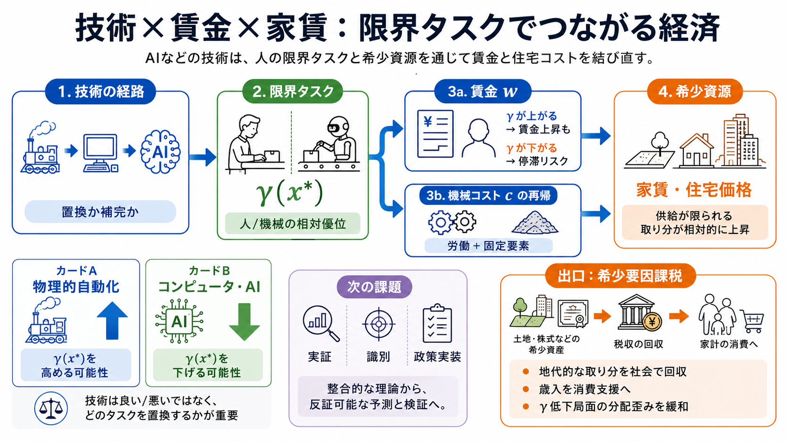

Automation and Rent Dissipation: Implications for Wages, ...
On the theory front, we extend the task model in Acemoglu and Restrepo (2022) to incorporate worker rents.4 We intention…

On the theory front, we extend the task model in Acemoglu and Restrepo (2022) to incorporate worker rents.4 We intention…
Acemoglu and Restrepo (2018b) develop a tractable task-based model and generalize this framework by introducing new task…
This paper presents a task-based framework, building on Acemoglu and Restrepo (2018a, 2018b) as well as Acemoglu and Aut…
The task framework naturally allows for the modeling of various imperfections. For example, the allocation of tasks to f…
3 Our work contributes to various literatures. First, our conceptual framework builds on previ-ous task models, in parti…